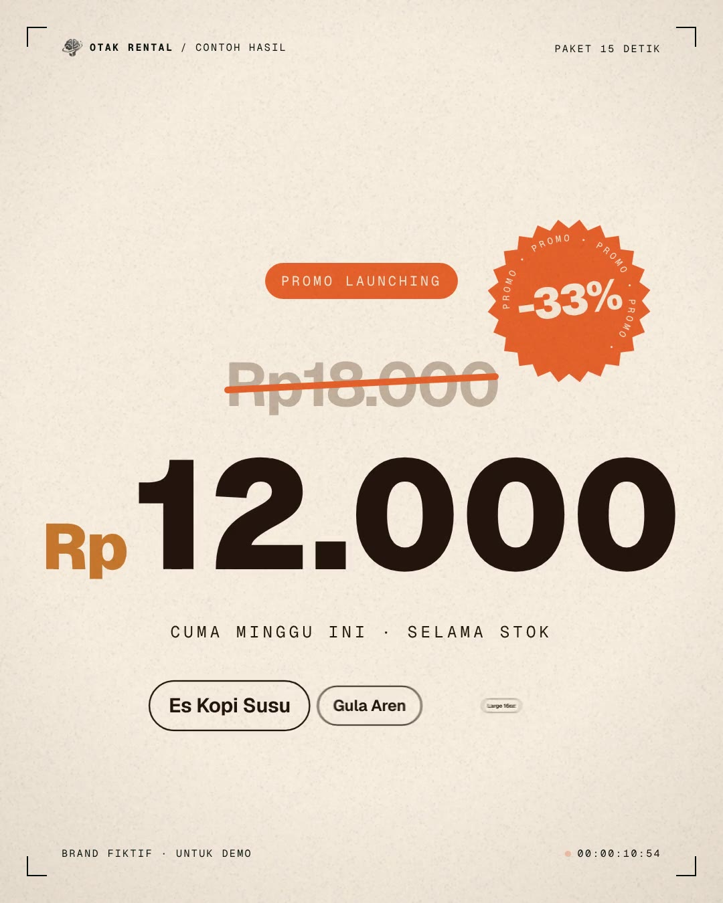

Di balik layar Otak Rental
Motion pakaiClaude Code.
Cara persis kami membuat semua video motion Otak Rental: brand disimpan di repo, Claude Code menulis animasinya, lalu dirender jadi MP4 60 fps. Bisa di cloud atau di laptop sendiri.
16 halamanCloud & lokalPrompt asli kami
🔒 claude.ai/code
New session
Sessions
Promo kopi 15sotakrental/brand · +612
Reel 30 detikotakrental/brand · +1.204
Carousel IGotakrental/brand · +388
Everything Movesotakrental/brand · +940
Promo kopi 15s⎇ claude/promo-kopi+612 −0Create PR
Buat video promo 15 detik 4:5 untuk Kopi Nalar. Pakai brand di repo ini, render jadi MP4 60 fps dengan suara.
Aku baca dulu CLAUDE.md dan folder brand, lalu buat animasinya.
Read CLAUDE.md, fonts/, assets/logo.png
Write sample.html (renderAt · 15 dtk · 1080×1350)
Bash node render.mjs --page sample.html --fps 60

▶Selesai: otak-rental-sample-15s.mp4 (1080×1350, 60 fps, 15 dtk). Sudah aku commit dan push ke branch.
Reply…
▣ otakrental/brandAuto ▾Opus 5.5 ▾↑
RENDER
60fps
MP4
otakrental · @otakrentalMotion pakai Claude Code